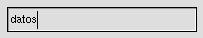
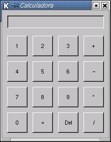

Vamos a ver una aplicación un poco más compleja que
haga uso de más widgets aparte de la ventana y los botones. Dos
widget muy utilizado son la plantilla y los entries.
Una plantilla (fixed) es un widget contenedor cuya única finalidad
es la de permitir colocar los widgets dentro de una ventana en las coordenadas
que queramos. Algunas de las operaciones más comunes sobre la plantilla
son:
| new Gtk::Fixed() | Crea un nuevo objeto Fixed |
| set_usize(tamX,tamY) | La redimensiona con tamX píxeles de ancho y tamY píxeles de alto |
| put(widget,posX,posY) | Sitúa al widget en las coordenadas posX y posY medidas con respecto al borde superior izquierdo del fixed |
| show() | Muestra el fixed |
Un entry es el típico widget que nos permite introducir datos. Por ejemplo en un formulario. 
Algunas de las operaciones más comunes para los entries son:
| new Gtk::Entry() | Crea un nuevo objeto Entry |
| set_usize(tamX,tamY) | La redimensiona con tamX píxeles de ancho y tamY píxeles de alto |
| get_text ( ) | Devuelve una cadena de caracteres con el texto que está mostrando el entry |
| append_text(cadena) | Añade al final el texto de cadena en la caja del entry |
| set_text(cadena) | Establece el texto que aparece en el entry al contenido de cadena |
| prepend_text(cadena) | Inserta al principio del texto que aparece en el entry el contenido de cadena |
| set_visibility( valor booleano ) | Especifica si el texto que se introduzca será visible o no. |
| show() | Muestra el entry |
El aspecto de la calculadora sería como el siguiente:

El código que la genera sería algo parecido a lo siguiente:
| #!/usr/bin/perl -w
use Gtk; # cargamos el modulo Gtk init Gtk; # Inicializa Gtk-Perl # Definicion de variables muy utilizadas
my $window = new Gtk::Window( "toplevel"
);
my $fixed = new Gtk::Fixed();
creaBotones();
# Entramos en el bucle Gtk de eventos
# Aqui nunca llegamos
#-----------------------------------------------------------------------------
sub creaBotones
# El boton del 2
# El boton del 3
# El boton del 4
# El boton del 5
# El boton del 6
# El boton del 7
# El boton del 8
# El boton del 9
# El boton del 0
# El boton del =
# El boton del Del
# Las operaciones
### Manejador del evento borrar
sub add
sub calculate
|
En el fichero gcalc.pl se puede encontrar el
código completo
 |
||
| Anterior | Home | Siguiente |